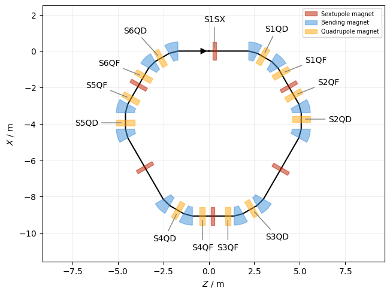
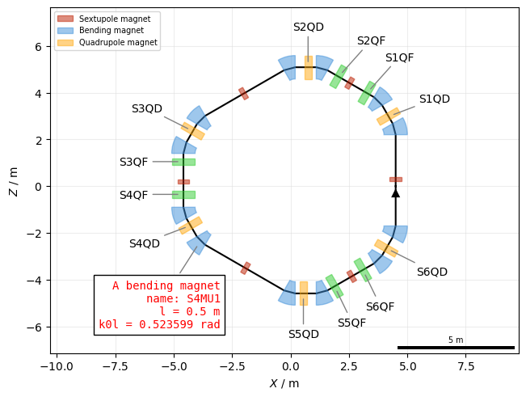
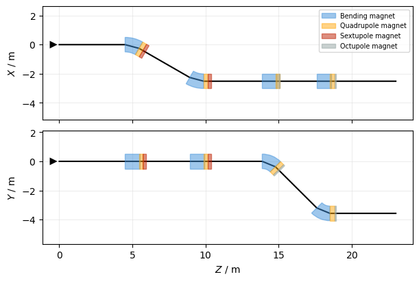
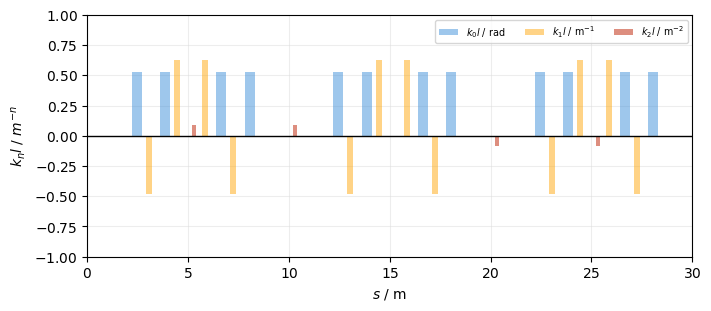
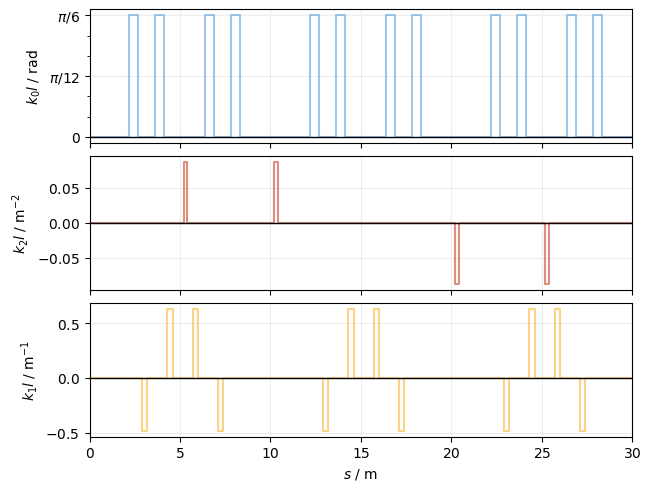

Beamline#
This is an example of plotting lines and surveys. First, create a simple line and a tracker:
Show imports
%load_ext autoreload
%autoreload 2
import xtrack as xt
import xpart as xp
import xplt
import numpy as np
xplt.apply_style()
np.random.seed(36963142)
Show line generation code
## Generate a simple 6-fold symmetric FODO lattice
n = 6 # number of sections
elements = {
"QF": xt.Quadrupole(length=0.3, k1=0.63 / 0.3),
"QD": xt.Quadrupole(length=0.3, k1=-0.48 / 0.3),
"MU": xt.Bend(length=0.5, knl=[np.pi / n], h=np.pi / n / 0.5),
}
parts = {
"a": [
xt.Node(0.7, "QF"),
xt.Node(1.4, "MU"),
xt.Node(2.1, "QD"),
xt.Node(2.8, "MU"),
],
"b": [
xt.Node(2.2, "MU"),
xt.Node(2.9, "QD"),
xt.Node(3.6, "MU"),
xt.Node(4.3, "QF"),
],
}
nodes = [xt.Node(5.0 * i, "a" if i % 2 else "b", name=f"S{i+1}") for i in range(n)]
# sextupoles
for i in range(n):
sx = xt.Sextupole(length=0.2, k2=0.5 * np.sin(2 * np.pi * (i / n)))
nodes.append(xt.Node(0.2, sx, from_=f"S{i+1}", name=f"S{i+1}SX"))
line = xt.Line.from_sequence(
nodes, length=5.0 * n, sequences=parts, elements=elements, auto_reorder=True
)
line.particle_ref = xp.Particles()
line.build_tracker()
## Generate a second line with horizontal and vertical bends
env = xt.Environment()
env.new("bend_v", "Bend", rot_s_rad=np.pi / 2)
env.new("quad", "Quadrupole", length=0.3)
env.new("sext", "Sextupole", length=0.2)
env.new("oct", "Octupole", length=0.1)
line2 = env.new_line(
components=[
env.new("mb1", "Bend", angle=np.pi / 6, length=1, at=5),
env.place(["quad", "sext"]),
env.new("mb2", "Bend", angle=-np.pi / 6, length=1, at=10),
env.place(["quad", "sext"]),
env.new("mbv1", "bend_v", angle=np.pi / 4, length=1, at=15),
env.place(["quad", "oct"]),
env.new("mbv2", "bend_v", angle=-np.pi / 4, length=1, at=20),
env.place(["quad", "oct"]),
env.new("ev", "Marker", at=25),
]
)
Survey#
Create a survey and a default floor plan plot:
survey = line.survey()
plot = xplt.FloorPlot(survey, labels=["S.Q.", "S1SX"])
plot.legend()

Customize the plot:
plot = xplt.FloorPlot(
line.survey(X0=4.5),
projection="XZ",
#
# Adjust box style for element names matching regex
#
# default_boxes=False, # use this to show *only* the boxes defined below (hiding the default elements)
boxes={
"S.QF": dict(color="limegreen"),
"S.QD": True, # default style for defocussing quads
"S.SX": dict(width=0.5),
},
#
# Adjust labels for element names matching regex
#
labels={
"S.Q.": True, # default labels
"S4MU1": dict(
text=(
"A bending magnet\n"
"name: {name}\n"
"l = {length} m\n"
"k0l = {element.knl[0]:g} rad"
),
xytext=(-3, -4),
bbox={"fc": "white"},
font="monospace",
c="red",
),
},
line=line, # optional, here we need it only to access it in the custom label of S4MU1
)
plot.add_scale()
plot.legend(loc="upper left")

Different projections are also supported. In this example we have a line with a horizontal and vertical chicane:
fig, ax = xplt.mpl.pyplot.subplots(2, figsize=(6, 4), sharex=True)
# First the default ZX projection, second the ZY projection
survey = line2.survey()
xplt.FloorPlot(survey, ax=ax[0])
xplt.FloorPlot(survey, projection="ZY", ax=ax[1])
ax[0].legend()
ax[0].set(xlabel=None);

Multipole strength#
A plot of the multipole strength \(k_nl\) as function of s-coordinate:
plot = xplt.KnlPlot(line, figsize=(7, 3))
plot.ax.set(ylim=(-1, 1));

The usual subplot spec string is also supported:
plot = xplt.KnlPlot(line, knl="k0l,k2l,k1l", filled=False)

See also